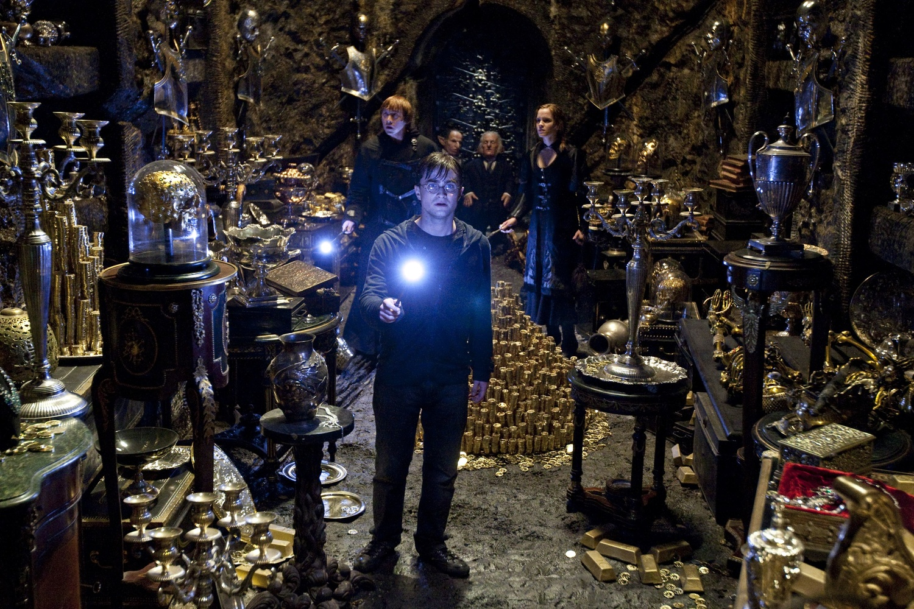
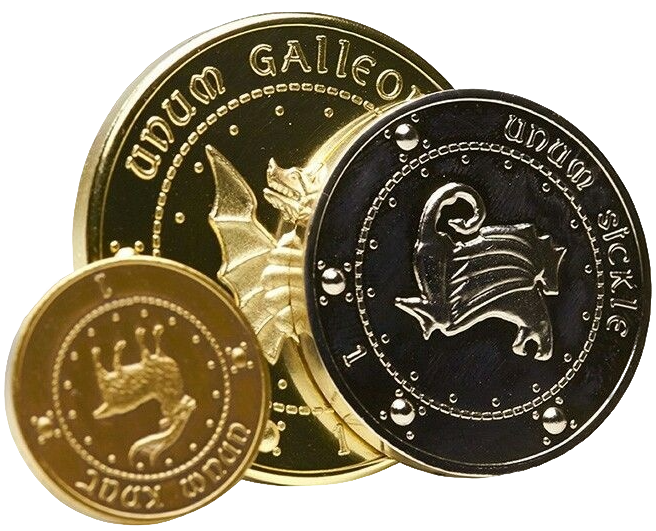
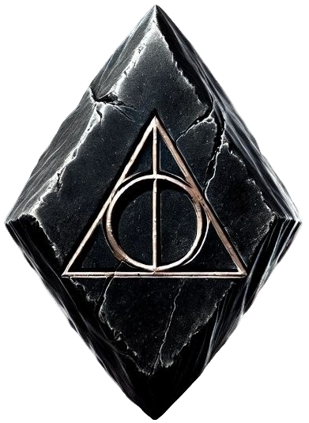
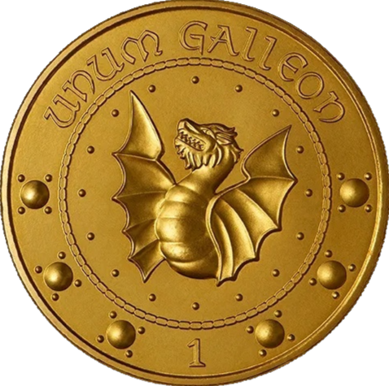
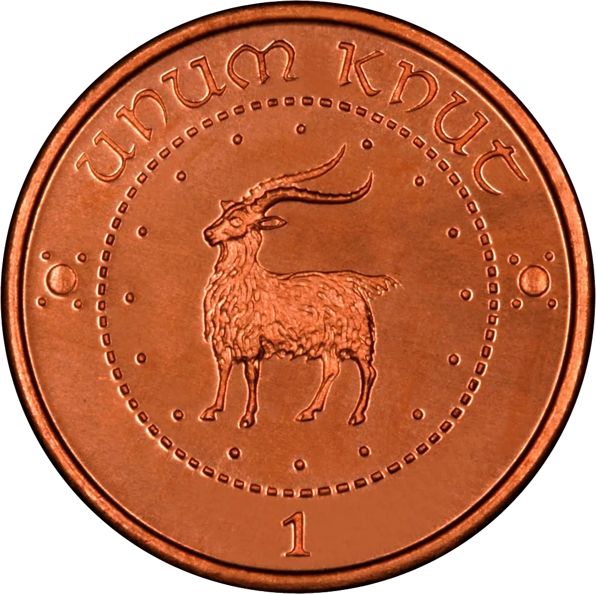

Храните сокровища там, где сама магия охраняет покой
Гринготтс — единственный банк, где ваши сокровища охраняют не только непробиваемые заклинания, но и драконы, которым скучно тысячу лет. Откройте счет сегодня. Сова с ключом прибудет в течение часа (или мы съедим её шляпу).
* Более 500 лет защищаем магическое наследие
Основан в 1474 году. Ограблен лишь единожды (и то без денег)
Легендарный гоблин Гринготт вырезал первые своды Гринготтса в скале задолго до того, как магглы придумали свои банки. С тех пор ничего не изменилось: мы по-прежнему не доверяем магии в одиночку, не признаём пластиковых карт и никогда не забываем лица тех, кто пытался нас обмануть. Гринготтс — это не место для хранения денег. Это место, где деньги обретают истинную ценность.
Вековая неприкосновенность
Наши хранилища уходят вглубь на полмили. Маггловская техника там не работает. Магия — тоже, если вы не гоблин.
Драконья охрана
В банке живут драконы, которые не знают, что такое «ласка». Они знают только «огонь» и «ещё огонь». Ваши деньги в безопасности.
Абсолютная тайна
Даже Министерство Магии не имеет права заглядывать в ваш сейф без вашего личного ключа и разрешения. Мы не выдаём секреты. Никому. Никогда.
Легенда о первом хранилище.
Как гоблины перестали доверять волшебникам
(и правильно сделали)
- Как всё начиналось
- Первое ограбление или почему гоблины не любят волшебников
- Что было дальше
Задолго до того, как волшебники научились хранить деньги в банках, гоблины уже копали. Они копали глубоко, упорно и с полным пониманием того, что золото любит тишину. Первые шахты появились под будущей Косой Аллеей ещё в XIII веке. Тогда никто не называл это банком. Это называлось «место, куда лучше не спускаться без разрешения».
В 1474 году гоблин по имени Гринготт заключил сделку с группой волшебников. Условия были просты: гоблины предоставляют хранилища, волшебники — защиту от магглов и Министерства. Никто не подписывал договор. Никто не обменивался клятвами. Просто пожали руки — и с тех пор Гринготтс не нарушил ни одного обещания. Волшебники, впрочем, тоже. Почти.
Оно случилось в 1712 году. Волшебник по имени Барнаби Блэквуд попытался вскрыть хранилище №12 с помощью заклинания, которое он сам же и придумал. Заклинание сработало. Стены хранилища — тоже. Блэквуд провёл внутри три дня, питаясь крысами и собственными надеждами. Когда его вытащили, он утверждал, что видел дракона. Дракона тогда в банке ещё не было. Это многое объясняет.
После случая с Блэквудом гоблины перестали пускать волшебников в шахты без сопровождения. Потом — перестали пускать вообще. Потом — перестали разговаривать. Потом — перестали доверять. С тех пор прошло больше трёхсот лет, но гоблины всё ещё помнят. Они вообще ничего не забывают. Особенно долги.
Гринготтс рос вглубь и вширь. Появились новые уровни, новые хранилища, новые драконы. Волшебники приходили и уходили. Министерство менялось. Магглы изобрели пластиковые карты — гоблины до сих пор считают это личным оскорблением. Но одно осталось неизменным: если вы оставили в Гринготтсе своё золото, оно там и останется. Даже если вы забудете. Даже если вы умрёте. Даже если вы попытаетесь забрать его без ключа.
Если вы читаете этот текст — значит, вы ещё не клиент Гринготтса. Или уже клиент, но забыли пароль. В любом случае — добро пожаловать. У нас есть хранилище для вас. Возможно, оно даже пустое. Пока.
Мы храним не только деньги. Мы храним вашу историю
Выберите услугу, которая защитит ваше наследие так, как не способен ни один щит.

Семейные хранилища
Арендуйте личный склеп-хранилище на глубине от 50 до 500 метров. Чем глубже — тем дешевле процент за обслуживание (драконы живут ближе к центру Земли, им так теплее). Доступ только по фамильной магии. Ваш прапрадед оставил это вам. Мы не дадим этому пропасть.
хит
Обмен валют
Конвертируйте любые магические монеты по самому справедливому курсу на Косой Аллее. Меняем даже старые валюты, вышедшие из оборота (да, мы знаем, что вы нашли руны на чердаке).

Драконья инкассация
Перевозка ваших сокровищ из банка в поместье — с огоньком (в прямом смысле). Ваш груз охраняет личный дракон-курьер. Доставка за 15 минут по всей Великобритании. Обратите внимание: дракона кормить не нужно, но чешую придётся пылесосить.
Оценка артефактов
Нашли подозрительный амулет или старую палочку? Наши гоблины-оценщики скажут точную стоимость и историю предмета. Если артефакт проклят — мы честно предупредим (и возьмём плату за снятие проклятия).

Что мы принимаем на хранение
| Предмет | Принимаем? | Условия приёма |
|---|---|---|
| Монеты (G, S, K) | Да | Принимаем любые монеты, кроме фальшивых. Фальшивые — конфискуем, а вас — в жабу. |
| Драгоценности | Да | Обязательная оценка гоблином. Если гоблин скажет «блестит подозрительно» — ждите эксперта. |
| Семейные реликвии | Да | Только по родословной. Если ваша фамилия не в списке «Священных 28» — приносите справку от Министерства. |
| Проклятые артефакты | Осторожно | Принимаем только после снятия проклятия. Снятие — за ваш счёт. Если проклятие снимет гоблин — за двойной счёт. |
| Живые драконы | Нет | Не принимаем. У нас уже есть дракон. Ему не нужна компания. Он интроверт. |
| Философский камень | Категорически нет | |
| Запретные книги | Только в Запретном хранилище | Министерство не узнает |
* Если вы не уверены, можно ли хранить ваш предмет — спросите
гоблина;
Если он пожмёт плечами — значит, можно;
Если он вызовет дракона —значит, нет.
Биржа Косой Аллеи
Здесь магия стоит денег

1 Галлеон = 17 Сиклей =
493 Кната
* Все операции проводятся в реальном времени.
Если курс внезапно скаканул - значит, кто-то крупно купил метлу или
Малфои снова скупают недвижимость.
Мы не вмешиваемся в рынок. Только фиксируем.
Мы всегда там, где нужно. Но лучше — приходите до заката.
Адрес: Северный вход, Косая Аллея, Лондон.
* Вход через проход за грязным пабом «Дырявый котёл».
Если не
найдёте — спросите у кота.
График работы:
- Пн — Пт: с 7:00 до 21:00 (по совиному времени).
- Сб: с 9:00 до 15:00 (только для клиентов с золотым ключом).
- Вс: Выходной. Гоблины играют в карты и пьют огневиски.
- В полнолуние: Банк закрыт. Даже у драконов бывает плохое настроение.
Связь с поддержкой:
Если у вас остались вопросы — позовите домового эльфа. Кнопка «Вызвать эльфа» работает круглосуточно. Но помните: эльфы любят жаловаться на зарплату. Будьте вежливы.